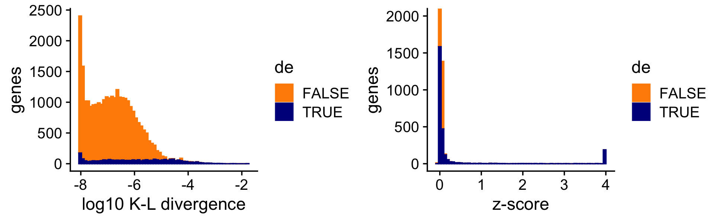

Last updated: 2021-10-26
Checks: 6 1
Knit directory: single-cell-topics/analysis/
This reproducible R Markdown analysis was created with workflowr (version 1.6.2). The Checks tab describes the reproducibility checks that were applied when the results were created. The Past versions tab lists the development history.
Great! Since the R Markdown file has been committed to the Git repository, you know the exact version of the code that produced these results.
Great job! The global environment was empty. Objects defined in the global environment can affect the analysis in your R Markdown file in unknown ways. For reproduciblity it’s best to always run the code in an empty environment.
The command set.seed(1) was run prior to running the code in the R Markdown file. Setting a seed ensures that any results that rely on randomness, e.g. subsampling or permutations, are reproducible.
Great job! Recording the operating system, R version, and package versions is critical for reproducibility.
To ensure reproducibility of the results, delete the cache directory de_analysis_detailed_look_more_cache and re-run the analysis. To have workflowr automatically delete the cache directory prior to building the file, set delete_cache = TRUE when running wflow_build() or wflow_publish().
Great job! Using relative paths to the files within your workflowr project makes it easier to run your code on other machines.
Great! You are using Git for version control. Tracking code development and connecting the code version to the results is critical for reproducibility.
The results in this page were generated with repository version 17d0249. See the Past versions tab to see a history of the changes made to the R Markdown and HTML files.
Note that you need to be careful to ensure that all relevant files for the analysis have been committed to Git prior to generating the results (you can use wflow_publish or wflow_git_commit). workflowr only checks the R Markdown file, but you know if there are other scripts or data files that it depends on. Below is the status of the Git repository when the results were generated:
Ignored files:
Ignored: data/droplet.RData
Ignored: data/pbmc_68k.RData
Ignored: data/pbmc_purified.RData
Ignored: data/pulseseq.RData
Ignored: output/droplet/diff-count-droplet.RData
Ignored: output/droplet/fits-droplet.RData
Ignored: output/droplet/rds/
Ignored: output/pbmc-68k/fits-pbmc-68k.RData
Ignored: output/pbmc-68k/rds/
Ignored: output/pbmc-purified/fits-pbmc-purified.RData
Ignored: output/pbmc-purified/rds/
Ignored: output/pulseseq/diff-count-pulseseq.RData
Ignored: output/pulseseq/fits-pulseseq.RData
Ignored: output/pulseseq/rds/
Untracked files:
Untracked: analysis/de_analysis_detailed_look_cache/
Untracked: analysis/de_analysis_detailed_look_more_cache/
Untracked: plots/
Note that any generated files, e.g. HTML, png, CSS, etc., are not included in this status report because it is ok for generated content to have uncommitted changes.
These are the previous versions of the repository in which changes were made to the R Markdown (analysis/de_analysis_detailed_look_more.Rmd) and HTML (docs/de_analysis_detailed_look_more.html) files. If you’ve configured a remote Git repository (see ?wflow_git_remote), click on the hyperlinks in the table below to view the files as they were in that past version.
| File | Version | Author | Date | Message |
|---|---|---|---|---|
| Rmd | 17d0249 | Peter Carbonetto | 2021-10-26 | workflowr::wflow_publish(“de_analysis_detailed_look_more.Rmd”, |
| Rmd | 2b5780a | Peter Carbonetto | 2021-10-25 | Made some improvements to the detailed DE investigations. |
| Rmd | 9a8de60 | Peter Carbonetto | 2021-10-25 | A few revisions to de_analysis_detailed_look_more analysis. |
| html | 8445a1c | Peter Carbonetto | 2021-10-20 | One more small edit to the de_analysis_detailed_look_more analysis. |
| Rmd | a65de9e | Peter Carbonetto | 2021-10-20 | workflowr::wflow_publish(“de_analysis_detailed_look_more.Rmd”) |
| html | e3cc4a3 | Peter Carbonetto | 2021-10-20 | Fixed plots and added text to de_analysis_detailed_look_more analysis. |
| Rmd | f746cb3 | Peter Carbonetto | 2021-10-20 | workflowr::wflow_publish(“de_analysis_detailed_look_more.Rmd”) |
| html | 9d61046 | Peter Carbonetto | 2021-10-20 | Revised text and plots in de_analysis_detailed_look_more analysis. |
| Rmd | 503cca3 | Peter Carbonetto | 2021-10-20 | workflowr::wflow_publish(“de_analysis_detailed_look_more.Rmd”, |
| html | 36acb71 | Peter Carbonetto | 2021-10-20 | Added some text to the de_analysis_detailed_look_more analysis. |
| Rmd | a7f4b81 | Peter Carbonetto | 2021-10-20 | workflowr::wflow_publish(“de_analysis_detailed_look_more.Rmd”) |
| Rmd | 1e13200 | Peter Carbonetto | 2021-10-19 | Added plots to de_analysis_detailed_look_more. |
| Rmd | 0b25553 | Peter Carbonetto | 2021-10-19 | Working on new de_analysis_detailed_look_more analysis. |
| Rmd | bb56afa | Peter Carbonetto | 2021-10-18 | Implemented function simulate_manytopic_umi_data. |
| html | 7408820 | Peter Carbonetto | 2021-10-18 | First build of de_analysis_detailed_look_more analysis. |
| Rmd | d49ec08 | Peter Carbonetto | 2021-10-18 | workflowr::wflow_publish(“de_analysis_detailed_look_more.Rmd”) |
| Rmd | 7484c14 | Peter Carbonetto | 2021-10-14 | Added rmd for new analysis de_analysis_detailed_look_more. |
| Rmd | cb60f4c | Peter Carbonetto | 2021-10-14 | workflowr::wflow_publish(“de_analysis_detailed_look.Rmd”) |
Here we expand the evaluation of the new topic-model-based DE analysis methods to consider the case of more than two topics. When comparing multiple groups, clusters or topics it is less clear what it means for a gene to be “differentially expressed”. So to simplify the evaluation we simulate the data so that each gene is differentially expressed in at most one topic.
In this evaluation can no longer compare to DESeq2 because DESeq2 is designed to compare gene expression across two groups. Still, we can closely examine the benefit of accounting for uncertainty.
Load the packages used in the analysis below, and some additional functions for simulating the data.
library(Matrix)
library(fastTopics)
library(ggplot2)
library(cowplot)
source("../code/de_analysis_functions.R")We begin by simulating UMI count data from a rank-6 Poisson NMF model such that roughly half of the genes have the same expression rate across all topics, and the other half have a different rate of expression in exactly one out of the six topics. The details of the simulation are similar to the two-topic case.
set.seed(1)
m <- 10000
k <- 6
dat <- simulate_manytopic_umi_data(m = m,k = k)
X <- dat$X
F <- dat$F
L <- dat$LNow we fit a multinomial topic model to the simulated UMI count data. To simplify evaluation, we assume that the topic proportions are known, and fix them to their ground-truth values. In this way, the only error that can arise is in the estimates of the expression rates \(f_{ij}\).
fit0 <- init_poisson_nmf(X,F = dat$F,L = with(dat,s*L))
fit <- fit_poisson_nmf(X,fit0 = fit0,numiter = 40,method = "scd",
update.loadings = NULL,verbose = "none")
fit <- poisson2multinom(fit)
summary(fit)
# Model overview:
# Number of data rows, n: 1000
# Number of data cols, m: 10000
# Rank/number of topics, k: 6
# Evaluation of model fit (40 updates performed):
# Poisson NMF log-likelihood: -3.521271656222e+06
# Multinomial topic model log-likelihood: -3.516218632828e+06
# Poisson NMF deviance: +4.250115181654e+06
# Max KKT residual: +4.432856e-04
Warning: The above code chunk cached its results, but it won’t be re-run if previous chunks it depends on are updated. If you need to use caching, it is highly recommended to also set knitr::opts_chunk$set(autodep = TRUE) at the top of the file (in a chunk that is not cached). Alternatively, you can customize the option dependson for each individual chunk that is cached. Using either autodep or dependson will remove this warning. See the knitr cache options for more details.
First we perform a DE analysis without shrinking the LFC estimates:
set.seed(1)
de.noshrink <- de_analysis(fit,X,shrink.method = "none",
control = list(ns = 10000,nc = 2))
# Fitting 10000 Poisson models with k=6 using method="scd".
# Computing log-fold change statistics from 10000 Poisson models with k=6.
Warning: The above code chunk cached its results, but it won’t be re-run if previous chunks it depends on are updated. If you need to use caching, it is highly recommended to also set knitr::opts_chunk$set(autodep = TRUE) at the top of the file (in a chunk that is not cached). Alternatively, you can customize the option dependson for each individual chunk that is cached. Using either autodep or dependson will remove this warning. See the knitr cache options for more details.
Next we perform a second DE analysis using adaptive shrinkage to shrink the LFC estimates:
set.seed(1)
de <- de_analysis(fit,X,shrink.method = "ash",control = list(ns = 1e4,nc = 2))
# Fitting 10000 Poisson models with k=6 using method="scd".
# Computing log-fold change statistics from 10000 Poisson models with k=6.
# Stabilizing posterior log-fold change estimates using adaptive shrinkage.
Warning: The above code chunk cached its results, but it won’t be re-run if previous chunks it depends on are updated. If you need to use caching, it is highly recommended to also set knitr::opts_chunk$set(autodep = TRUE) at the top of the file (in a chunk that is not cached). Alternatively, you can customize the option dependson for each individual chunk that is cached. Using either autodep or dependson will remove this warning. See the knitr cache options for more details.
To measure differential expression across multiple topics, we use the “least extreme” log-fold change, which, for topic \(k\), is defined as the LFC between topic \(k\) and \(j \neq k\) such that the expression ratio is closest to 1. Then we compare estimates of the “least extreme” LFCs with and without shrinkage.
As expected, smaller estimates, and estimates corresponding to genes with lower expression, tend to be more strongly shrunk toward zero.
pdat <- data.frame(noshrink = c(de.noshrink$postmean),
shrink = c(de$postmean),
log10mean = rep(log10(de$f0),k))
ggplot(pdat,aes(x = noshrink,y = shrink,fill = log10mean)) +
geom_point(shape = 21,color = "white",size = 2) +
geom_abline(intercept = 0,slope = 1,color = "black",linetype = "dotted") +
scale_fill_gradient2(low = "deepskyblue",mid = "gold",high = "orangered",
midpoint = -4) +
labs(x = "original LFC estimates",
y = "shrunken LFC estimates") +
theme_cowplot()
The next two bar charts show the overall impact of the shrinkage on the distribution of the \(z\)-scores; dark blue bars are for diifferentially expressed genes, and orange bars are for non-differentially expressed genes. Note that for visualization purposes the \(z\)-scores are projected onto the interval \([-4,+4]\).
nonzero_lfc <- matrix(FALSE,m,k)
for (i in 1:m) {
y <- dat$F[i,]
if (max(y) - min(y) > 1e-8) {
j <- which.max((y - mean(y))^2)
nonzero_lfc[i,j] <- TRUE
}
}
pdat <- data.frame(noshrink = clamp(c(de.noshrink$z),-4,+4),
shrink = clamp(c(de$z),-4,+4),
de = c(nonzero_lfc))
p1 <- ggplot(subset(pdat,de),aes(x = noshrink,color = de)) +
geom_histogram(color = "darkblue",fill = "darkblue",bins = 64) +
coord_cartesian(xlim = c(-4,+4),ylim = c(0,400)) +
labs(x = "z-score",y = "genes",title = "without shrinkage") +
theme_cowplot()
p2 <- ggplot(subset(pdat,de),aes(x = shrink,color = de)) +
geom_histogram(color = "darkblue",fill = "darkblue",bins = 64) +
coord_cartesian(xlim = c(-4,+4),ylim = c(0,400)) +
labs(x = "z-score",y = "genes",title = "with shrinkage") +
theme_cowplot()
p3 <- ggplot(subset(pdat,!de),aes(x = noshrink,color = de)) +
geom_histogram(color = "darkorange",fill = "darkorange",bins = 64) +
coord_cartesian(xlim = c(-4,+4)) +
labs(x = "z-score",y = "genes",title = "without shrinkage") +
theme_cowplot()
p4 <- ggplot(subset(pdat,!de),aes(x = shrink,color = de)) +
geom_histogram(color = "darkorange",fill = "darkorange",bins = 64) +
coord_cartesian(xlim = c(-4,+4)) +
labs(x = "z-score",y = "genes",title = "with shrinkage") +
theme_cowplot()
print(plot_grid(p1,p2,p3,p4,nrow = 2,ncol = 2))
And the next two bar charts show the overall impact of the shrinkage on the \(p\)-values. (The Y axis in the “with shrinkage” plot has been cut off at 2,500 genes to show in more detail the smaller \(p\)-values identifying true positives.)
pdat <- data.frame(noshrink = 10^(-c(de.noshrink$lpval)),
shrink = 10^(-c(de$lpval)),
de = factor(c(nonzero_lfc)))
p1 <- ggplot(pdat,aes(x = noshrink,color = de,fill = de)) +
geom_histogram(bins = 64) +
scale_color_manual(values = c("darkorange","darkblue")) +
scale_fill_manual(values = c("darkorange","darkblue")) +
coord_cartesian(ylim = c(0,2500)) +
labs(x = "p-value",y = "genes",title = "without shrinkage") +
theme_cowplot()
p2 <- ggplot(pdat,aes(x = shrink,color = de,fill = de)) +
geom_histogram(bins = 64) +
scale_color_manual(values = c("darkorange","darkblue")) +
scale_fill_manual(values = c("darkorange","darkblue")) +
coord_cartesian(ylim = c(0,2500)) +
labs(x = "p-value",y = "genes",title = "with shrinkage") +
theme_cowplot()
print(plot_grid(p1,p2))
Since most of the LFCs are zero, the adaptive shrinkage strongly shrinks most of the LFC estimates toward zero. Still, because it is adaptive, the DE genes with stronger support are shrunk only a little or not at all.
Here we briefly assess the benefits of accounting for uncertainty in the LFC estimates. The benefits are more pronounced here because more topics brings more uncertainty to the estimates.
First we compare the point estimates to the (shrunk) posterior mean estimates:
pdat <- data.frame(est = c(de$est),
shrink = c(de$postmean),
log10mean = rep(log10(de$f0),k))
ggplot(pdat,aes(x = est,y = shrink,fill = log10mean)) +
geom_point(shape = 21,color = "white",size = 2) +
geom_abline(intercept = 0,slope = 1,color = "black",linetype = "dotted") +
scale_fill_gradient2(low = "deepskyblue",mid = "gold",high = "orangered",
midpoint = -4) +
labs(x = "point estimates",
y = "shrunken estimates") +
theme_cowplot()
| Version | Author | Date |
|---|---|---|
| 36acb71 | Peter Carbonetto | 2021-10-20 |
As before, even very large (in magnitude) point estimates are sometimes shrunk to zero; this happens because although the MLEs can be far from zero, the HPD intervals can also be very large.
Now we compare a ranking of the LFCs based on the K-L divergence measure used in Dey, Hsiao & Stephens (2017), which doesn’t fully account for uncertainty in the LFC estimates, to a ranking based on the \(z\)-scores. Since the K-L divergence is not a signed ranking, here we restrict our attention to LFCs estimated to be positive. (Note that the Y axis in the right-hand plot has been cut off at 2,000 genes to give more detail to the distribution of the true positives. Also, for better visualization the K-L divergences are shown on the log scale.)
D <- fastTopics:::min_kl_poisson(fit$F)
i <- which(de$est > 0)
pdat1 <- data.frame(lkl = log10(D[i] + 1e-8),de = factor(nonzero_lfc[i]))
pdat2 <- data.frame(z = clamp(de$z[i],-4,+4),de = factor(nonzero_lfc[i]))
p1 <- ggplot(pdat1,aes(x = lkl,color = de,fill = de)) +
geom_histogram(bins = 64) +
scale_color_manual(values = c("darkorange","darkblue")) +
scale_fill_manual(values = c("darkorange","darkblue")) +
labs(x = "log10 K-L divergence",y = "genes") +
theme_cowplot()
p2 <- ggplot(pdat2,aes(x = z,color = de,fill = de)) +
geom_histogram(bins = 64) +
scale_color_manual(values = c("darkorange","darkblue")) +
scale_fill_manual(values = c("darkorange","darkblue")) +
coord_cartesian(ylim = c(0,2000)) +
labs(x = "z-score",y = "genes") +
theme_cowplot()
print(plot_grid(p1,p2))
Sometimes genes with very large LFCs get highly ranked by the K-L divergence measure (while being uncertain about these estimates), whereas this happens less often for the \(z\)-scores. As a result the fastTopics \(z\)-scores yield improved power at low false discovery rates:
pdat1 <- create_fdr_vs_power_curve(-D[i],nonzero_lfc[i],length.out = 400)
pdat2 <- create_fdr_vs_power_curve(de$lfsr[i],nonzero_lfc[i],length.out = 400)
pdat <- rbind(cbind(pdat1,method = "kl"),
cbind(pdat2,method = "fastTopics"))
ggplot(pdat,aes(x = fdr,y = power,color = method)) +
geom_line(size = 0.65) +
scale_color_manual(values = c("royalblue","darkorange")) +
theme_cowplot()
Alternatively we can compare the two rankings in an ROC plot:
pdat1 <- create_roc_curve(-log(D[i]),nonzero_lfc[i],length.out = 100)
pdat2 <- create_roc_curve(de$lfsr[i],nonzero_lfc[i],length.out = 100)
pdat <- rbind(cbind(pdat1,method = "kl"),
cbind(pdat2,method = "fastTopics"))
ggplot(pdat,aes(x = fpr,y = tpr,color = method)) +
geom_line(size = 0.75) +
geom_abline(intercept = 0,slope = 1,color = "black",linetype = "dotted") +
scale_color_manual(values = c("royalblue","darkorange")) +
theme_cowplot()
sessionInfo()
# R version 3.6.2 (2019-12-12)
# Platform: x86_64-apple-darwin15.6.0 (64-bit)
# Running under: macOS Catalina 10.15.7
#
# Matrix products: default
# BLAS: /Library/Frameworks/R.framework/Versions/3.6/Resources/lib/libRblas.0.dylib
# LAPACK: /Library/Frameworks/R.framework/Versions/3.6/Resources/lib/libRlapack.dylib
#
# locale:
# [1] en_US.UTF-8/en_US.UTF-8/en_US.UTF-8/C/en_US.UTF-8/en_US.UTF-8
#
# attached base packages:
# [1] stats graphics grDevices utils datasets methods base
#
# other attached packages:
# [1] cowplot_1.0.0 ggplot2_3.3.5 fastTopics_0.6-74 Matrix_1.2-18
#
# loaded via a namespace (and not attached):
# [1] httr_1.4.2 tidyr_1.1.3 jsonlite_1.7.2 viridisLite_0.3.0
# [5] RcppParallel_4.4.2 assertthat_0.2.1 mixsqp_0.3-46 yaml_2.2.0
# [9] progress_1.2.2 ggrepel_0.9.1 pillar_1.6.2 backports_1.1.5
# [13] lattice_0.20-38 quantreg_5.54 glue_1.4.2 quadprog_1.5-8
# [17] digest_0.6.23 promises_1.1.0 colorspace_1.4-1 htmltools_0.4.0
# [21] httpuv_1.5.2 pkgconfig_2.0.3 invgamma_1.1 SparseM_1.78
# [25] purrr_0.3.4 scales_1.1.0 whisker_0.4 later_1.0.0
# [29] Rtsne_0.15 MatrixModels_0.4-1 git2r_0.26.1 tibble_3.1.3
# [33] farver_2.0.1 generics_0.0.2 ellipsis_0.3.2 withr_2.4.2
# [37] ashr_2.2-51 pbapply_1.5-1 lazyeval_0.2.2 magrittr_2.0.1
# [41] crayon_1.4.1 mcmc_0.9-6 evaluate_0.14 fs_1.3.1
# [45] fansi_0.4.0 MASS_7.3-51.4 truncnorm_1.0-8 tools_3.6.2
# [49] data.table_1.12.8 prettyunits_1.1.1 hms_1.1.0 lifecycle_1.0.0
# [53] stringr_1.4.0 MCMCpack_1.4-5 plotly_4.9.2 munsell_0.5.0
# [57] irlba_2.3.3 compiler_3.6.2 rlang_0.4.11 grid_3.6.2
# [61] htmlwidgets_1.5.1 labeling_0.3 rmarkdown_2.3 gtable_0.3.0
# [65] DBI_1.1.0 R6_2.4.1 knitr_1.26 dplyr_1.0.7
# [69] utf8_1.1.4 workflowr_1.6.2 rprojroot_1.3-2 stringi_1.4.3
# [73] parallel_3.6.2 SQUAREM_2017.10-1 Rcpp_1.0.7 vctrs_0.3.8
# [77] tidyselect_1.1.1 xfun_0.11 coda_0.19-3